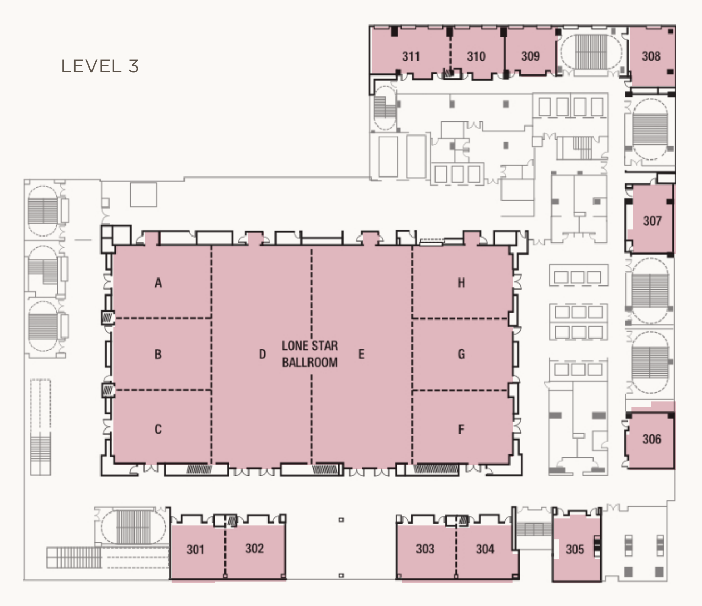

Introduction
Compositional, or modular, learning enables systems to exploit the structure of a problem by building abstractions between functionally distinct components. By compositionality we mean the principle that a small set of reusable modules — skills, representations, sub-goals, or controllers — can be recombined according to rules to cover a combinatorially large space of behaviors. These structural assumptions reduce the sample complexity of the learning system, which has driven increasing adoption of compositional approaches in robotics, primarily because the diversity and lack of standardization across robot embodiments, observational modalities, and task goals make collecting data that supports all combinations infeasible.
As the community scales data and builds large foundation models, one could argue that these models approximate compositional behavior across the scaled modality, embodiment, and goal combinations. However, this approximation is incomplete in ways that matter for robotics. Certain modalities, such as force and tactile sensing, are intrinsically difficult to scale and standardize across setups; high-dimensional modalities such as vision restrict data collection and confine deployment to controlled environments; and foundation models are trained on corpora covering only a small selection of today's embodiments, while new embodiments are continuously built and adopted across labs, rendering many such models inapplicable.
This half-day workshop solicits novel work that uses the principle of compositionality or modularity to tackle learning problems in robotics. In particular, we encourage approaches that leverage the representational power of scaled systems while retaining the structure of modular ones — getting the best of both worlds. As scaling reshapes robot learning, the open question is not whether to scale or to compose, but where scaling suffices and where explicit composition remains necessary.
Intended Audience
The workshop targets a diverse, interdisciplinary audience spanning robotics, machine learning, and embodied AI:
- Researchers in reinforcement and imitation learning building hierarchical and skill-based policies;
- Foundation-model and VLA practitioners interested in where scaled representations fall short;
- Researchers in neuro-symbolic AI, task and motion planning, multimodal sensing, and control interested in modular, reusable, and transferable robot behavior.
Core Challenges & Topics
- Modality composition. Can we develop modular systems that compose scaled modality representations (e.g., vision and language) with modules learned for data-scarce modalities such as force and tactile sensing? What interfaces let abundant, internet-scale representations cover the gaps left by modalities that are intrinsically hard to scale and standardize?
- Interfacing modules. How can we develop better abstractions for effective modularization in robotics — for example, for long-horizon manipulation, or for embodiment transfer of policies across robots that differ in morphology and action space? What representation spaces (language, latent embeddings, spatial goal states, controllers) allow modules to be sequenced and recombined reliably?
- The role of agents in robotics. How can we leverage modular, agentic systems — high-level reasoners that invoke specialized skills, tools, and controllers — to perform manipulation in the real world? When is an agentic, modular decomposition stronger than an end-to-end monolithic policy, and when does scaling subsume it?
- Evaluation and benchmarking for compositionality. Current benchmarks largely measure end-to-end task success but fail to assess the modularity, reusability, or transfer of learned components. How should the community design physical and simulated benchmarks that explicitly evaluate compositional generalization, including across novel modality, embodiment, and goal combinations?
Invited Speakers
Panelists
The panel will feature our four invited speakers—Jiayuan Mao, Marc Toussaint, Leslie Pack Kaelbling, and Danfei Xu—joined by Yunzhe Pan and Dr. Xiansheng Yang.
Call for Papers
Submissions are closed. The extended submission deadline was October 6, 2026. Thank you to all authors who submitted their work.
We will run a selective contributed track (short papers and posters) reviewed for technical correctness, reproducibility, and actionable artifacts (e.g., skill libraries, benchmarks, datasets, metrics, or well-documented system case studies). We explicitly welcome works-in-progress and negative/ablation results, and encourage authors to share code and evaluation details.
Submissions are non-archival. Per CoRL policy, we will not accept work already published or accepted to the CoRL 2026 main conference. Accepted poster abstracts (and optional PDFs, with author permission) will be hosted here to help attendees identify relevant work.
Submission Instructions
- Submission portal: OpenReview
- Format: CoRL 2026 paper format, up to 6 pages (excluding references and appendix)
- Review process: Double-blind peer review
We encourage in-person presentation of accepted papers.
Important Dates
| Event | Date |
|---|---|
| Submissions open | September 9, 2026 |
| Submission deadline | October 6, 2026 (extended) |
| Notification of acceptance | October 19, 2026 |
| Camera-ready deadline | November 2, 2026 |
| Workshop | November 12, 2026 |
All deadlines are 11:59 PM Anywhere on Earth (AoE).
Schedule
Thursday, November 12, 2026 · 8:30 AM–12:00 PM. All times are local to Austin (CST, UTC−6).
Talks and discussions are in Rooms 310–311, Level 3, JW Marriott Austin. The poster session is in Lone Star Ballroom on Level 3.
| Time | Event |
|---|---|
| 8:30 AM | Welcome & Framing |
| 8:45 AM | Invited Talk — Jiayuan Mao |
| 9:10 AM | Invited Talk — Marc Toussaint |
| 9:35–10:20 AM | Poster Session, Lightning Pitches & Coffee Break Posters: Lone Star Ballroom, Level 3 · Boards 072L–091R |
| 10:20 AM | Invited Talk — Leslie Pack Kaelbling |
| 10:45 AM | Invited Talk — Danfei Xu |
| 11:10–11:50 AM | Panel Discussion & Breakout Discussions A panel conversation and facilitated small-group discussions. |
| 11:50 AM | Paper Award Announcement |
| 12:00 PM | Workshop Ends |
Venue & Posters
Our workshop takes place on Level 3 of JW Marriott Austin, 110 E 2nd St, Austin, TX. The talk room and poster area are on the same floor.
Talks & Discussions
Rooms 310–311
Level 3 · JW Marriott Austin
November 12 · 8:30 AM–12:00 PM CST
Poster Session
Lone Star Ballroom
Level 3 · JW Marriott Austin
November 12 · 9:35–10:20 AM CST
Poster Board Assignments
Our workshop uses boards 072L–091R in Lone Star Ballroom (Level 3) for the November 12 morning poster session, 9:35–10:20 AM CST. L and R indicate the left and right sides of each board. See the finalized organizer assignment. These are workshop board labels, not individual paper IDs.

View the venue floor plans (PDF). Map from the JW Marriott venue reference supplied by the conference organizers.
Organizers

Sponsors
We thank our sponsors for supporting the workshop.